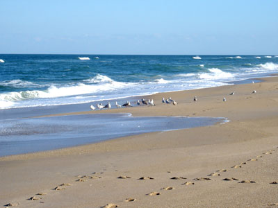
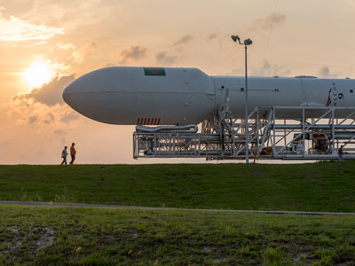
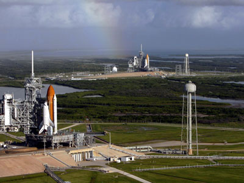

_and_Endeavour_(STS-400)_on_launch_pads.jpg){kind=link}
Prominent cape in Florida, near the center of the state's Atlantic coast, which includes site of the Cape Canaveral Space Force Station, Kennedy Space Center, Merritt Island, and Canaveral National Seashore
General Information
How to Get There
From Orlando (54 miles): Get on FL-408 E. Take FL-528 E to Church Ln in Cape Canaveral. Continue on Church Ln to destination.
Overview
Cape Canaveral is a small city on Florida's Space Coast and the gateway to the nation's most famous launch site. The area is home to the Kennedy Space Center, where the Apollo missions to the Moon and the Space Shuttle flights departed, and to Cape Canaveral Space Force Station, where commercial and military rockets such as SpaceX's Falcon 9 are launched today. The city is also home to Port Canaveral, one of the busiest cruise ports in the world, and to wide beaches and wildlife refuges.
Visitors come to Cape Canaveral for the Kennedy Space Center Visitor Complex, to watch rocket launches from the beaches and parks, and for Canaveral National Seashore and Merritt Island National Wildlife Refuge. They also come for cruises from Port Canaveral, for fresh seafood at the port, and for nearby Cocoa Beach, and it is about an hour from Orlando.
History
The cape was named "Cañaveral," Spanish for canebrake, by early Spanish explorers in the 1500s, and the area remained mostly wilderness and citrus groves until after World War II. In 1950, the first rocket was launched from the cape, and in 1958 NASA was created and began using the area for launches. Alan Shepard became the first American in space in 1961 from the Cape, and the Apollo 11 mission to the Moon launched from the Kennedy Space Center in 1969. The space shuttle program ran from 1981 to 2011, and since then commercial companies including SpaceX and Blue Origin have made the Space Coast a major launch center again. The city of Cape Canaveral was incorporated in 1963.
Sightseeing and Popular Landmarks
The Kennedy Space Center Visitor Complex has the Space Shuttle Atlantis, a Saturn V rocket, the Apollo/Saturn V Center, and tours of the launch pads. Cape Canaveral Space Force Station has the Air Force Space and Missile Museum and historic launch complexes, and Port Canaveral has a pier, restaurants, and cruise terminals. Jetty Park, at the entrance to the port, is a popular spot for watching launches, ships, and manatees, and the Exploration Tower is a museum with a lookout.
Culture and Museums
The Kennedy Space Center Visitor Complex has the U.S. Astronaut Hall of Fame and exhibits on the history of space exploration, and the Air Force Space and Missile Museum shows the history of rocket testing. The Brevard Zoo, the Space Coast Science Center, and the Cocoa Beach Pier are other attractions nearby. The city hosts events around launches, and the Cocoa Beach Surf Museum and the Ron Jon Surf Shop are well known to surfers.
Parks
Canaveral National Seashore protects 24 miles of undeveloped beach, a rare stretch of Atlantic coast, and offers swimming, fishing, and hiking. Merritt Island National Wildlife Refuge, which shares land with the Kennedy Space Center, has more than 500 species of wildlife, including manatees, alligators, and birds, and is a major stop on the Atlantic flyway. Jetty Park and Cocoa Beach Pier offer more beach access, and the Indian River Lagoon is good for kayaking.
Seasons and Weather
Cape Canaveral has a humid subtropical climate. Summers are hot and humid, with highs in the low 90s°F and afternoon thunderstorms, and winters are mild, with highs in the 70s°F. Hurricane season runs from June to November, and launch schedules can change because of weather, so visitors should check ahead.
This article uses material from Wikipedia as well as information from official tourism and institutional sources. Key references include Visit Space Coast, Kennedy Space Center Visitor Complex, NASA Kennedy Space Center, National Park Service Canaveral National Seashore, Merritt Island National Wildlife Refuge, and National Weather Service Melbourne. Wikipedia material is from the articles "Cape Canaveral, Florida" and "Kennedy Space Center", and is available under the Creative Commons Attribution-Share-Alike License 3.0.
Featured Locations

Joneboi at the English-language Wikipedia, CC BY-SA 3.0, via Wikimedia Commons; Image Size Adjusted

Canaveral National Seashore
National Seashore with 25 miles of pristine Atlantic Ocean beach, dunes and Mosquito Lagoon is the longest expanse of undeveloped land along the East Coast of Florida

SpaceX, CC0, via Wikimedia Commons; Image Size Adjusted
.jpg){kind=link}
Cape Canaveral Space Force Station
Station serving as primary launch site for the Space Force's Eastern Range with three launch pads currently active and includes the Air Force Space and Missile Museum with artifacts from the early American space program

Gzzz, CC BY-SA 4.0, via Wikimedia Commons; Image Size Adjusted

Kennedy Space Center
One of the NASA's ten field centers including the Kennedy Space Center Visitor Complex offering public tours of the center and Cape Canaveral Space Force Station

Merritt Island National Wildlife Refuge
Refuge is located on the Atlantic coast of Florida's largest barrier island containing over 1000 species of plants, 117 species of fish, 68 amphibians and reptiles, 330 birds, and 31 mammal species